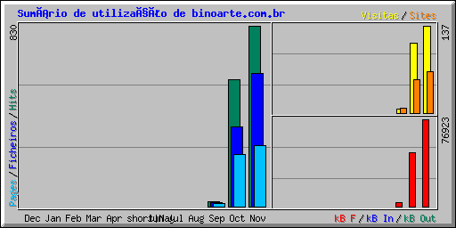

| Sumário por Mês | ||||||||||||
|---|---|---|---|---|---|---|---|---|---|---|---|---|
| Mês | Média Diária | Totais Mensais | ||||||||||
| Hits | Ficheiros | Pages | Visitas | Sites | kB F | kB In | kB Out | Visitas | Pages | Ficheiros | Hits | |
| Nov 2008 | 33 | 24 | 11 | 5 | 65 | 76923 | 0 | 0 | 137 | 279 | 611 | 830 |
| Oct 2008 | 18 | 11 | 7 | 3 | 52 | 47488 | 0 | 0 | 110 | 240 | 364 | 581 |
| Sep 2008 | 7 | 6 | 4 | 2 | 7 | 3509 | 0 | 0 | 6 | 13 | 18 | 23 |
| Totais | 127920 | 0 | 0 | 253 | 532 | 993 | 1434 | |||||
| Generated by Webalizer Version 2.01 |